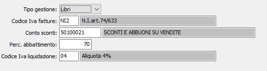

Iva editoria
La normativa speciale riguardante il regime Iva editori prevede due diverse rese distinte fra libri italia, libri estero (70%) e riviste e giornali (80%).
Tramite l'apposita tabella è possibile gestire tutte le casistiche.

Per ogni tipo gestione, libri italia, libri estero e riviste, è necessario configurare i seguenti parametri:
Nel “Codice Iva fatture” deve essere indicato il codice Iva riservato per le fatture di vendita per i quali deve essere applicato in fase di liquidazione Iva il calcolo dell’imposta. Si tratta di un codice non imponibile art. 74 e deve essere diverso per le tipologie di gestione.
Nel “Conto sconti” deve essere indicato il conto contabile utilizzato in fase di contabilizzazione fatture e in fase di calcolo liquidazione Iva in cui vengono riportati gli sconti applicati in fattura rispetto al prezzo di vendita al pubblico, deve essere diverso per le tipologie di gestione.
Nel “Perc. Abbattimento” deve essere indicata la percentuale di abbattimento da applicare sul totale imponibile lordo per il calcolo dell’Iva a debito.
Nel “Codice Iva liquidazione” deve essere indicato il codice dell’aliquota Iva utilizzata in fase di liquidazione per il calcolo dell’Iva a debito sulle vendite degli editori (tipicamente il 4%).